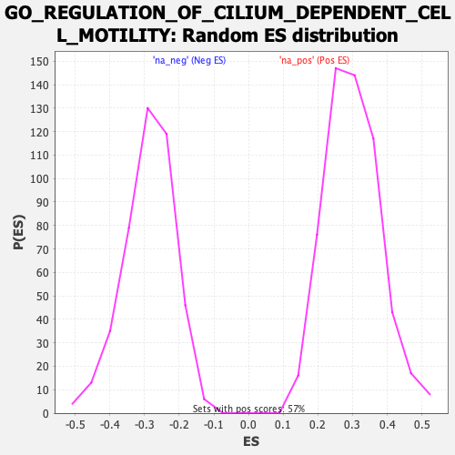

| | | Dataset | CK_basal |
| Phenotype | NoPhenotypeAvailable |
| Upregulated in class | na_pos |
| GeneSet | GO_REGULATION_OF_CILIUM_DEPENDENT_CELL_MOTILITY |
| Enrichment Score (ES) | 0.6018971 |
| Normalized Enrichment Score (NES) | 2.0046449 |
| Nominal p-value | 0.0 |
| FDR q-value | 0.04078033 |
| FWER p-Value | 0.548 |
Table: GSEA Results Summary
 Fig 1: Enrichment plot: GO_REGULATION_OF_CILIUM_DEPENDENT_CELL_MOTILITY
Fig 1: Enrichment plot: GO_REGULATION_OF_CILIUM_DEPENDENT_CELL_MOTILITY
Profile of the Running ES Score & Positions of GeneSet Members on the Rank Ordered List

Fig 2: GO_REGULATION_OF_CILIUM_DEPENDENT_CELL_MOTILITY: Random ES distribution
Gene set null distribution of ES for GO_REGULATION_OF_CILIUM_DEPENDENT_CELL_MOTILITY